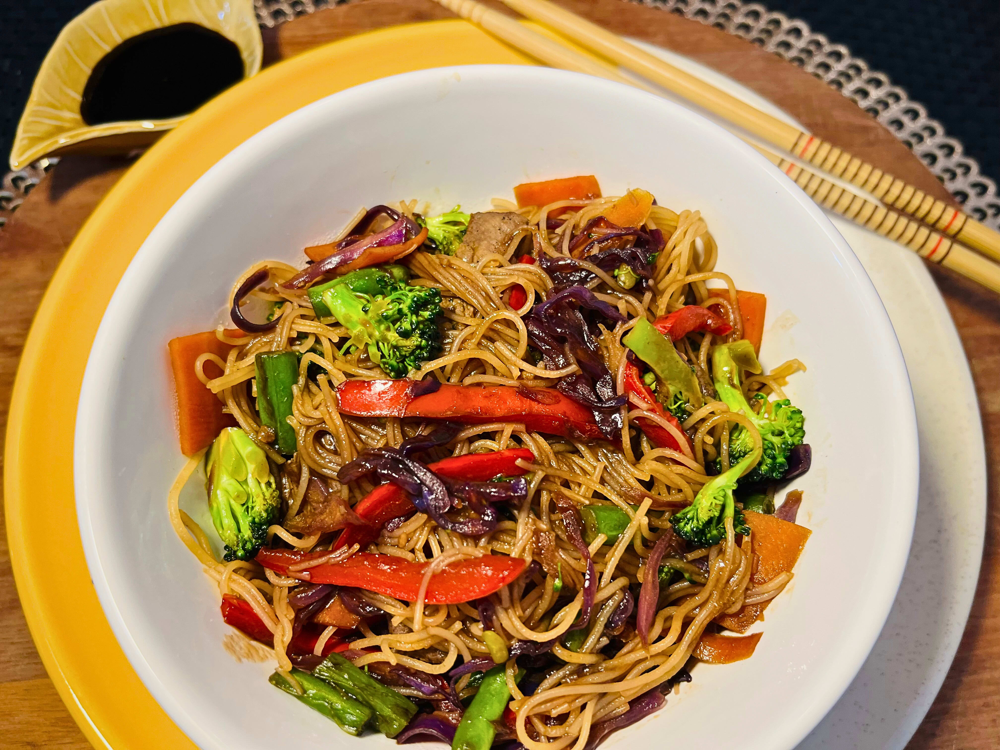
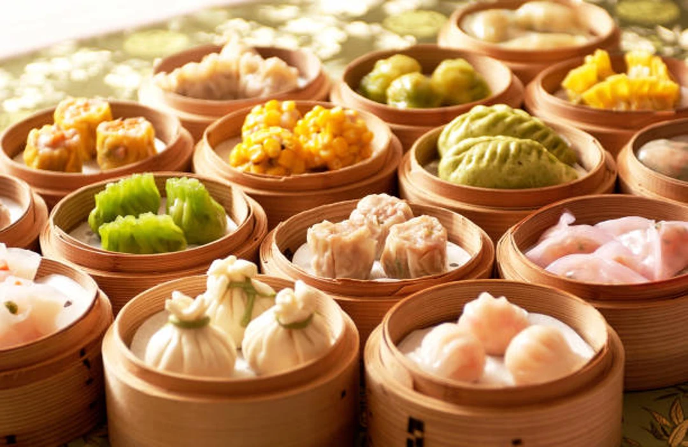

Yakisoba
Prato feito com macarrão, legumes, carne ou frango, muito popular pela mistura de sabores e praticidade.

Arroz Frito
Um clássico da culinária chinesa, preparado com arroz, ovos, legumes e carnes, muito saboroso e rápido.

Dim Sum
Pequenas porções servidas como aperitivos, incluindo bolinhos recheados cozidos no vapor.